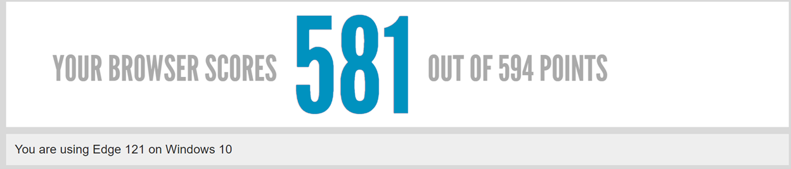

“Internet es un conjunto de redes de comunicación que permite conectar dispositivos que utilizan el mismo protocolo (TCP/IP) como ordenadores, tablets, teléfonos, tpv’s, etc.”
(Curiofeed, s.f.)
La WWW (World Wide Web): “Es el sistema que nos permite visualizar sitios web. Siendo que los sitios web o páginas web son solo uno de los servicios que nos ofrece internet“.
(Curiofeed, s.f.)
Protocolo de red. Http, Https, mailto y ftp son los principales protocolos web que encabezan una URL, indicando a la
máquina qué tipo de conexión debe realizar y cuál es el lenguaje específico que se hablará con la computadora o la red
de computadoras que brindarán la información al usuario.
Servicio. Www, www2, etc., se trata de los posibles servicios de soporte de información on-line, de los cuales la
World Wide Web es la más popular.
Dominio, tipo de dominio y país. Se trata del “nombre” de la empresa que brinda la información, o del proyecto o
red o la computadora en donde se encuentran, es decir, el nombre específico de quien tiene lo que buscamos; además el
tipo de servicio que presta: comercial (.com), educativo (.edu), etc., y el país al que pertenece: Argentina (.ar),
Brasil (.br), Italia (.it), etc.
Ruta y nombre del archivo. Las carpetas y directorios en los que se ubica el recurso específico dentro del
computador servidor (que brinda la información).
(Concepto, s.f.)
Servicio. Www, www2, etc., se trata de los posibles servicios de soporte de información on-line, de los cuales la World Wide Web es la más popular.
Dominio, tipo de dominio y país. Se trata del “nombre” de la empresa que brinda la información, o del proyecto o red o la computadora en donde se encuentran, es decir, el nombre específico de quien tiene lo que buscamos; además el tipo de servicio que presta: comercial (.com), educativo (.edu), etc., y el país al que pertenece: Argentina (.ar), Brasil (.br), Italia (.it), etc.
Ruta y nombre del archivo. Las carpetas y directorios en los que se ubica el recurso específico dentro del computador servidor (que brinda la información).
(Concepto, s.f.)
GET: el método GET es el más habitual. Cuando tú pides algo, el servidor te responderá con las peticiones solucionadas.
HEAD: el método HEAD es similar al anterior en cuanto a hace una solicitud al servidor, pero solo responde con parte de la información. Esto significa que te entregará los encabezados de respuesta y de solicitud, pero no la respuesta especifica. Esto te permite obtener información.
POST: el método POST se encarga de enviar datos a un recurso específico para que se hagan allí los cambios necesarios. Se utiliza para crear objetos o datos.
PUT: el método PUT va de la mano de POST, pues se encarga de modificar datos. Aquí se envían todos los datos, sin importar si se cambian o no.
DELETE: el método DELETE, como su propio nombre indica, se utiliza cuando tenemos la necesidad de eliminar algún dato o elemento al hacer la llamada.
(Redacción KeepCoding, 2023)
HEAD: el método HEAD es similar al anterior en cuanto a hace una solicitud al servidor, pero solo responde con parte de la información. Esto significa que te entregará los encabezados de respuesta y de solicitud, pero no la respuesta especifica. Esto te permite obtener información.
POST: el método POST se encarga de enviar datos a un recurso específico para que se hagan allí los cambios necesarios. Se utiliza para crear objetos o datos.
PUT: el método PUT va de la mano de POST, pues se encarga de modificar datos. Aquí se envían todos los datos, sin importar si se cambian o no.
DELETE: el método DELETE, como su propio nombre indica, se utiliza cuando tenemos la necesidad de eliminar algún dato o elemento al hacer la llamada.
(Redacción KeepCoding, 2023)
“En lo relativo a los datos, como, por ejemplo, al rellenar formularios con nombres de usuario y contraseñas, el método POST ofrece mucha discreción. Los datos no se muestran en el caché ni tampoco en el historial de navegación”
(Desarrollo web, 2020)
“GET: solicita la recuperación de un recurso específico. Es el método más común utilizado cuando se accede a una página web”.
(KeepCoding Team, 2023)
Este código indica que la solicitud del navegador ha sido procesada correctamente por el servidor y que se ha devuelto una respuesta adecuada. En otras palabras, el código 200 OK significa que todo está bien y que la página web solicitada se ha cargado correctamente.
(Fernández, A., 2023)
(Fernández, A., 2023)
No lo es, los motivos del error 404 son:
La dirección URL o sus contenidos (archivos o imágenes) se han eliminado o cambiado (los enlaces internos del sitio no han redireccionado a la nueva página de destino).
El enlace no se colocó correctamente (por ejemplo, por falta de atención en la creación o rediseño), el URL se enlazó de forma incorrecta (no se marcó adecuadamente) o la dirección que el usuario introdujo en la barra del navegador no concuerda con el URL.
El servidor web responsable no está en funcionamiento o hay problemas de conexión.
El nombre de dominio solicitado no puede ser convertido en una dirección IP por el Domain Name System.
El nombre de dominio (ya) no existe.
(Creación de páginas web, 2023)
El enlace no se colocó correctamente (por ejemplo, por falta de atención en la creación o rediseño), el URL se enlazó de forma incorrecta (no se marcó adecuadamente) o la dirección que el usuario introdujo en la barra del navegador no concuerda con el URL.
El servidor web responsable no está en funcionamiento o hay problemas de conexión.
El nombre de dominio solicitado no puede ser convertido en una dirección IP por el Domain Name System.
El nombre de dominio (ya) no existe.
(Creación de páginas web, 2023)
Sí, esto se debe a que el error 500 notifica un error interno del servidor.
El Internal Server Error puede ocurrir cuando la solicitud está siendo procesada por el servidor web. Este código de estado reúne todos aquellos sucesos no planificados en el servidor que impiden que una página web se muestre correctamente. Normalmente, el código de estado 500 es un error interno del servidor, más específicamente en su configuración. Algunas de las fuentes típicas que lo generan son:
Un error en los permisos: los permisos de acceso a los archivos y carpetas principales no se han asignados correctamente.
PHP Timeout: el script intenta acceder a un recurso externo y experimenta una espera excesivamente larga (timeout).
Código incorrecto en .htaccess: la estructura en un archivo .htaccess puede ser incorrecta.
Error en la sintaxis o en el código del script CGI-/Perl: en algunos casos, los scripts son incorrectos y, especialmente, las rutas de acceso pueden no estar alineadas correctamente.
PHP Memory Limit: un proceso ha excedido el límite de memoria y no es posible ejecutarlo correctamente.
(Cuestiones técnicas, 2019)
-
Un error en los permisos: los permisos de acceso a los archivos y carpetas principales no se han asignados correctamente.
PHP Timeout: el script intenta acceder a un recurso externo y experimenta una espera excesivamente larga (timeout).
Código incorrecto en .htaccess: la estructura en un archivo .htaccess puede ser incorrecta.
Error en la sintaxis o en el código del script CGI-/Perl: en algunos casos, los scripts son incorrectos y, especialmente, las rutas de acceso pueden no estar alineadas correctamente.
PHP Memory Limit: un proceso ha excedido el límite de memoria y no es posible ejecutarlo correctamente.
[…] algunas formas sintácticas o expresiones HTML que se consideraban válidas hace unos años han pasado a considerarse no recomendados para los desarrollos web actuales. Sin embargo, dado la gran cantidad de páginas web que se construyeron usando estas formas del lenguaje anticuadas y a que los programadores no podían adaptarse de un día para otro a los cambios en los lenguajes, en lugar de no permitir estas expresiones, las nuevas versiones de los lenguajes las clasifican como deprecated o no recomendadas.
(González, E., s.f.)
Algunos elementos desaprobados son:
acronym -> Define un acronimo
basefont -> Define una fuente base
center -> Define texto centrado
(Tutorialspoint, s.f.)
(González, E., s.f.)
Algunos elementos desaprobados son:
acronym -> Define un acronimo
basefont -> Define una fuente base
center -> Define texto centrado
(Tutorialspoint, s.f.)

(Walton, A., s.f.)
Una tabla HTML (table) es un conjunto de celdas (td o th) organizadas en filas (tr) que a su vez se pueden organizar en grupos de filas (thead, tbody o tfoot). Además, la tabla puede tener una leyenda (caption) y hacer referencia a las columnas (col y colspan).
(Mclibre, 2022)
(Mclibre, 2022)
Los campos de texto (input) son los controles de formulario más básicos. Son un modo muy cómodo de permitir al usuario introducir cualquier tipo de datos.
Un campo de texto de una sola línea se crea utilizando un elemento (input) cuyo valor de atributo type se establece en text, u omitiendo por completo el atributo type.
Uno de los tipos de entrada originales era el tipo de campo de texto password. Este oculta el valor que se introduce.
Las casillas de verificación se crean estableciendo el atributo type del elemento (input) en el valor checkbox.
Un botón de opción se crea estableciendo el atributo type del elemento (input) en el valor radio
Botón (button):
Hay tres tipos de entrada según el tipo de botones que se utilicen:
Submit: Envía los datos del formulario al servidor. Para los elementos (button), omitir el atributo type (o introducir un valor de tipo no válido) da como resultado un botón de envío (submit).
Reset: Restablece todos los controles de formulario a sus valores por defecto.
Button: Botones que no tienen efecto automático, pero que se pueden personalizar con código JavaScript.
(MDN contributors, 2023)
Un campo de texto de una sola línea se crea utilizando un elemento (input) cuyo valor de atributo type se establece en text, u omitiendo por completo el atributo type.
Uno de los tipos de entrada originales era el tipo de campo de texto password. Este oculta el valor que se introduce.
Las casillas de verificación se crean estableciendo el atributo type del elemento (input) en el valor checkbox.
Un botón de opción se crea estableciendo el atributo type del elemento (input) en el valor radio
Botón (button):
Hay tres tipos de entrada según el tipo de botones que se utilicen:
Submit: Envía los datos del formulario al servidor. Para los elementos (button), omitir el atributo type (o introducir un valor de tipo no válido) da como resultado un botón de envío (submit).
Reset: Restablece todos los controles de formulario a sus valores por defecto.
Button: Botones que no tienen efecto automático, pero que se pueden personalizar con código JavaScript.
(MDN contributors, 2023)

Sobre el ciclo de vida y desarrollo de los sistemas de información:
- ¿Cuál es el ciclo de vida de los sistemas de información?
“El ciclo de vida de los sistemas de información es el proceso que documenta y sigue la creación, implementación y mantenimiento de un sistema informático. Se divide en cinco etapas principales: análisis, diseño, implementación, operación y mantenimiento”.
(SiliconNews, s.f.)
- ¿Cuál es el ciclo de desarrollo de sistemas de información?
Planificación: Se realiza un análisis de las necesidades de información y los objetivos del sistema.
Análisis: Se estudian y evalúan los requisitos del sistema, la arquitectura y la infraestructura del sistema.
Diseño: Se diseña la interfaz de usuario, la base de datos, la lógica del programa y el flujo de trabajo.
Desarrollo: El sistema se desarrolla según el diseño previo.
Implementación: El sistema se implementa y se prueba para asegurar que funciona correctamente y cumple con los requisitos.
Mantenimiento: El sistema se mantiene para garantizar que funcione correctamente y se actualiza para añadir nuevas características.
Reemplazo: Cuando se necesita un sistema nuevo o mejorado, el sistema existente se desecha y se reemplaza por uno nuevo.
(SiliconNews, s.f.)
Análisis: Se estudian y evalúan los requisitos del sistema, la arquitectura y la infraestructura del sistema.
Diseño: Se diseña la interfaz de usuario, la base de datos, la lógica del programa y el flujo de trabajo.
Desarrollo: El sistema se desarrolla según el diseño previo.
Implementación: El sistema se implementa y se prueba para asegurar que funciona correctamente y cumple con los requisitos.
Mantenimiento: El sistema se mantiene para garantizar que funcione correctamente y se actualiza para añadir nuevas características.
Reemplazo: Cuando se necesita un sistema nuevo o mejorado, el sistema existente se desecha y se reemplaza por uno nuevo.
(SiliconNews, s.f.)